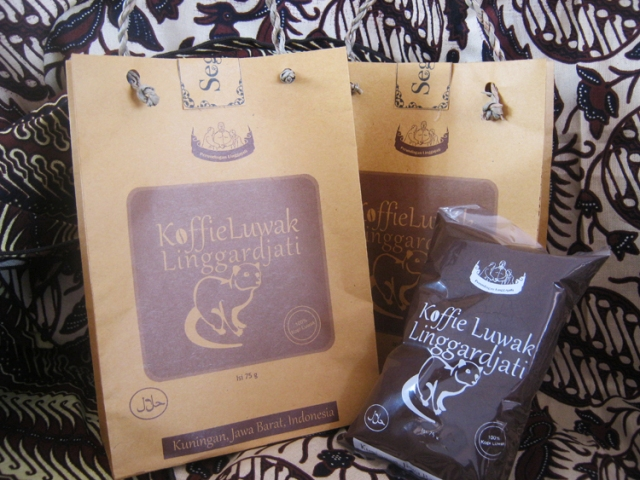

8. Kopi luwak linggarjati

Kopi yang berasal dari biji kopi yang sudah dimakan binatang luwak. Luwak sengaja dibudidayakan di sekitar Gunung Ciremai, tepatnya di daerah Linggarjati ini terkenal dengan roma kopi yang khas dan nikmat. Kopi linggarjati diolah alami tanpa pengawet sehingga citra rasa serta aroma kopinya tetap terjaga khasnya.